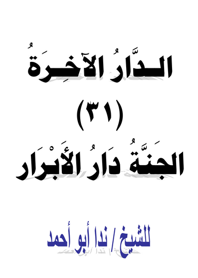
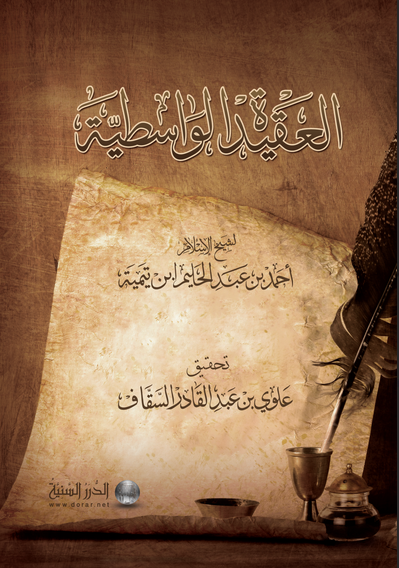
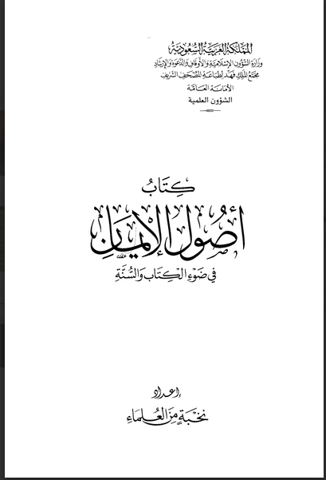
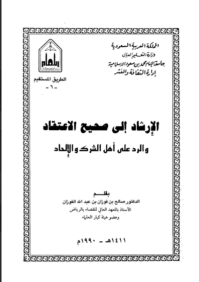
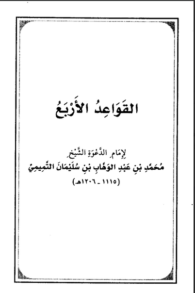
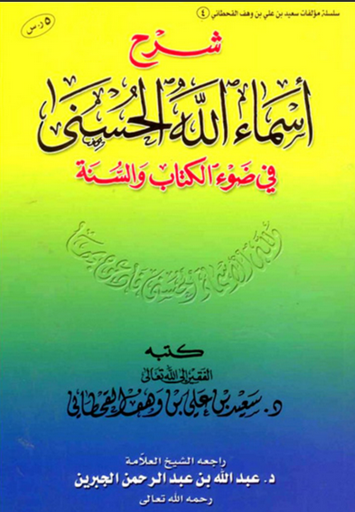
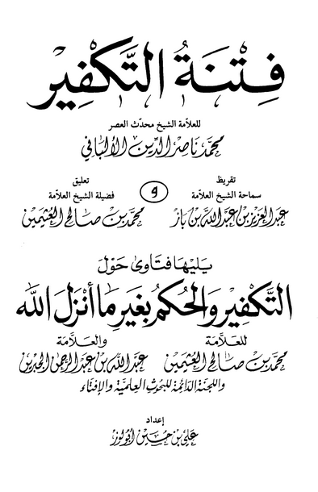
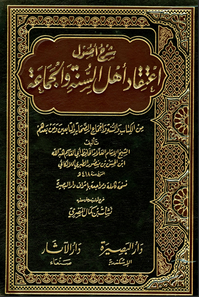

Ad-daarul Aakhirah, Al-Jannatu Daarul Abraar
| Penulis | : | Syaikh Nida Abu Ahmad |
| Penerbit | : | - |
| Tahun terbit | : | - |

Al-Aqiidah Al-Wasithiyyah
| Penulis | : | Ahmad bin Abdul Halim Ibnu Taymiyyah |
| Penerbit | : | Ad-Durarus Sanniyyah |
| Tahun terbit | : | 2011 |

Ushulul Iman, Fii Dhou'il Kitaabi was Sunnah
| Penulis | : | Perkumpulan Ulama |
| Penerbit | : | Kerajaan Arab Saudi |
| Tahun terbit | : | 2000 |

Al-Irsyad Ilaa Shahihil I'tiqod, war Raddu 'Alaa Ahlis Syirki wal Ilhad
| Penulis | : | Dr. Shalih bin Fauzan bin Abdullah Al-Fauzan |
| Penerbit | : | Kerajaan Arab Saudi |
| Tahun terbit | : | 1990 |

Al-Qoulus Sadiid Fii Man Ankaro Taqsiimat Tauhid
| Penulis | : | Abdur Razzaq bin Abdul Muhsin Al-Badr |
| Penerbit | : | Dar Ibnul Qayyim & Daar Ibnu Affan |
| Tahun terbit | : | - |

Al-Qowa'idul Arba'
| Penulis | : | Muhammad bin Abdul Wahhab bin Sulaiman At-Tamimi |
| Penerbit | : | - |
| Tahun terbit | : | - |

Syarh Asma'illahil Husna Fii Dhou'il Kitaabi was Sunnah
| Penulis | : | Dr. Said bin Ali bin Wahf Al-Qohthoni |
| Penerbit | : | - |
| Tahun terbit | : | - |

Fitnatut Takfiir
| Penulis | : | Muhammad Nashiruddin Al-Albani |
| Penerbit | : | Daar Ibnu Khuzaimah |
| Tahun terbit | : | 1998 |

Syarh Ushul I'tiqad Ahlis Sunnah wal Jama'ah
| Penulis | : | Abul Qasim Hibatullah Ibnul Hisan bin Manshur Ath-Thabari Al-Lalika'i |
| Penerbit | : | Maktab Daar Al-Bashiirah |
| Tahun terbit | : | 2001 |